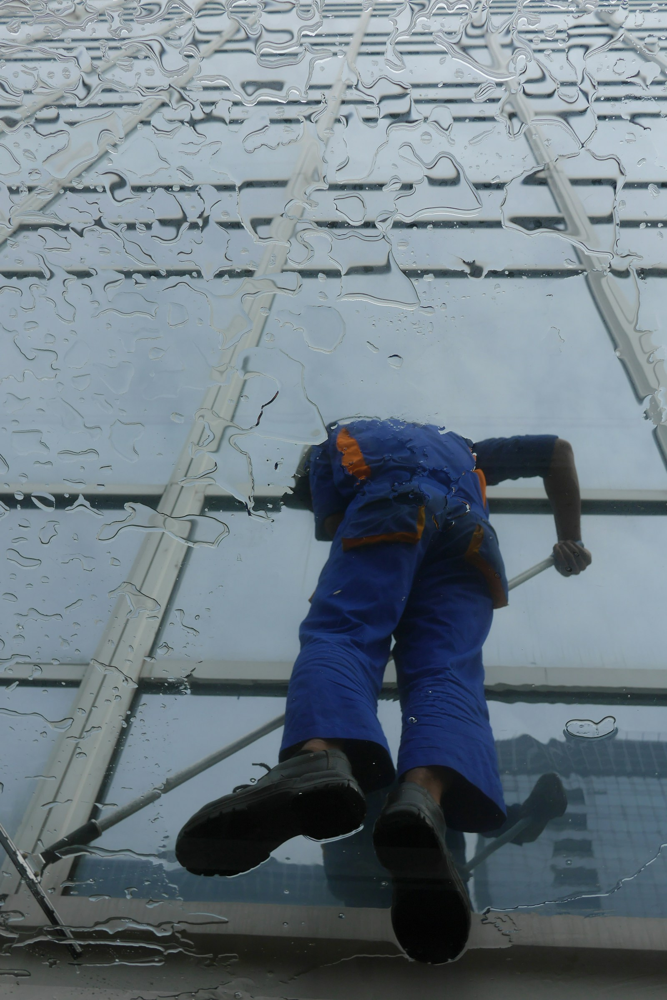

Experience Operations
Lobby-to-restroom quality is treated as a customer journey signal, not a checklist item.
Published:
This mock positions janitorial services as brand protection, employee readiness, and customer experience. It avoids commodity messaging and uses SEO-ready structure with clear recency cues.
Instead of generic claims like "full-service janitorial," this framing emphasizes business impact: occupancy confidence, visual brand standards, and cleaner customer transitions throughout the day.
Lobby-to-restroom quality is treated as a customer journey signal, not a checklist item.
Published:
Cleaning schedules are anchored to foot-traffic peaks and shift changes to reduce visible downtime.
Published:
Short weekly updates turn janitorial performance into simple operational insight for leadership.
Published:
Photo choices intentionally emphasize professionalism, trust, and detail work over generic cleaning-stock tropes.



Use this sequence to maintain freshness signals while preserving readability and visual breathing room.
Map sections to buyer intent: outcomes, proof, and process. Keep one clear H1 and tight H2 hierarchy.
Add visible timestamps to case snippets, service notes, and operational briefs.
Connect related pages by use-case to improve crawl paths and help users self-qualify faster.
Replace with your real service areas, case highlights, and trust elements. The spacing, structure, SEO signals, and visual rhythm are already scaffolded.
Start Customizing